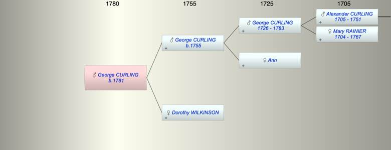

| [Index] |
| George CURLING (1781 - ) |
|  |
| b. 1781 at London |
| Parents: |
| George CURLING (1755 - ) |
| Dorothy WILKINSON |
| Siblings (2): |
| Ann CURLING (1784 - ) |
| Sarah CURLING (1784 - ) |
| Events in George CURLING (1781 - )'s life | |||||
| Date | Age | Event | Place | Notes | Src |
| 1781 | George CURLING was born | London | Note 1 | ||
| Note 1: bap at St Andrew Undershaft son of George and Dorothy 31 Oct 1781 |
| Created on a Mac™ using iFamily for Mac™ on 8 Oct 2023 |